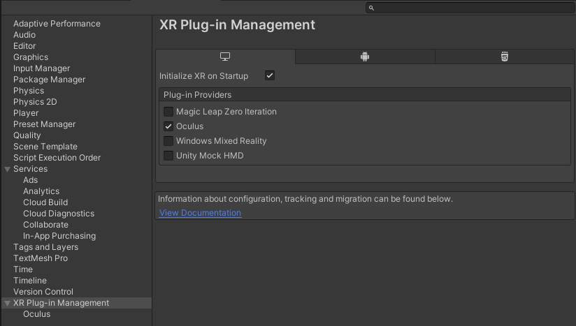
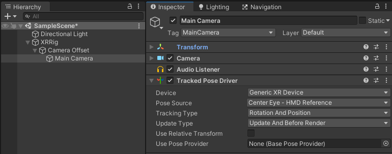
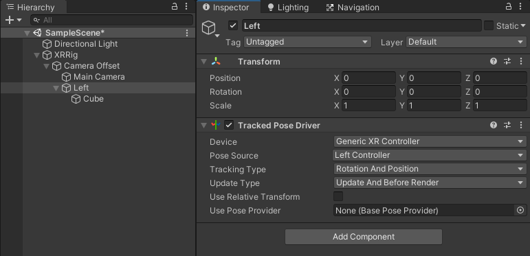

Cette seconde partie fait suite à l’intro expliquant les choix hardware/logiciel de ce tutorial.
Nous allons mettre ici en place le projet, et le rendre compatible VR.
Couches d’une application VR
Il y a plusieurs couches à prendre en compte dans une application VR :
- le module s’assurant que notre casque est supporté dans Unity
- la détection de la position des casques/contrôleurs
- la stack d’intéraction : comment gérer le fait d’attraper des objets, se déplacer/téléporter, avoir des pointeurs, interagir avec l’UI, animer les mains, …
Pour le 1), nous allons dans la mise en place du projet installer le XR Plug-in system, et son plugin Oculus. Il y a d’autres choix, suivant le hardware et les versions d’Unity, mais celui-là semble être le plus pédagogique pour ce que sera à l’avenir la VR dans Unity.
Pour le 2), dans cette partie, nous ferons ici un choix très simple, afin d’avoir le plus grand contrôle sur ce que l’on fait pour bien comprendre.
Pour le 3), nous allons initier ici le projet comme si on voulait tout faire à la main (ce qui est assez pédagogique), et donc juste s’intéresser à savoir quand les boutons du contrôleur sont enfoncés.
Je proposerai certainement dans un article ultérieur une alternative pour le 2) et 3) qui permet d’avoir un environnement riche très rapidement, mais avec un contrôle moins complet.
Mise en place du projet
- Création d’un projet dans Unity : choisir le template de projet “3D”
- Aller dans Project Settings > XR Plugin Management, et cliquer sur “Install XR Plugin Management”
- Plug-in provider : cocher “Oculus”

- Si vous comptez utiliser git avec votre projet, je vous invite à utilise un fichier .gitignore de ce type, pour éviter de tracker tous les fichiers générés/temporaires : https://github.com/github/gitignore/blob/master/Unity.gitignore
Suivi du casques et des mains
Il existe plusieurs manières de préparer une scène pour détecter votre casque VR, et ses contrôleurs :
- utiliser les composants simples TrackedPoseDriver : c’est ce que nous allons voir ici, pour montrer ce qu’on peut avoir en quelques clics
- utiliser le package XR Interaction Toolkit : c’est probablement une solution d’avenir, car géré par Unity directement. Cependant elle est encore en phase de prototype, donc on essuie de fait les plâtres en se basant dessus en ce moment
- utiliser un SDK dédié à un matériel, Oculus Integration ou SteamVR par exemple
- utiliser manuellement les appels à un InputDevice du module UnityEngine.XR (et tout refaire ce que font les exemples précédents à la main donc, mais avec un contrôle complet)
La solution que l’on va donc utiliser ici se base sur le composant TrackedPoseDriver.
Il permet de dire qu’un GameObject prend comme position relative à son parent la position dans la réalité d’une pièce de hardware VR (casque, contrôleur, …)
Préparation de la scène
Caméra
Sur une scène neuve (avec vraiment aucune manipulation après sa création), il y a un moyen très rapide de placer correctement le TrackedPoseDriver faisant que la caméra suive la position de votre tête :
- Sélectionner l’objet Main Caméra
- Clic-droit dessus > XR > Concert main camera to XR Rig
Cela crée un ensemble d’objet de base, XR Rig, incluant la caméra et son TrackedposeDriver.

Cela rajoute en “bonus” un composant CameraOffset permettant de gérer comment est calculée la hauteur du casque par rapport au sol.
Le défaut de cette solution est que la moindre modification sur la scène l'empêche de marcher.
Mais manuellement, pour obtenir quelque chose de proche, il suffit en fait de :
- ajouter un composant TrackedPoseDriver sur le GameObject contenant la caméra.
- mettre dans device : Generic XR Device
- mettre dans Pose source : Center eye
Attention, si vous voulez par code déplacer l’utilisateur (téléportation, véhicule), il faut que votre caméra soit dans un objet parent, qui sera l’objet que vous déplacerez. Dans le cas du système automatisé décrit en début de chapitre, l’object XRRig généré est celui à déplacer.
Contrôleurs
Pour suivre les contrôleurs VR, pour chaque main :
- créez un objet vide
- ajoutez un Tracked pose driver
- en device, choisissez Generic XR Controller
- en Pose source, choisir la main qui nous intéresse
- pour “voir la main”, pensez à ajouter en fils de cet objet quelque chose de visible, comme un cube

Tester en direct
Si vous avez un casque branché sur votre PC (un casque PC, ou un Oculus Quest branché avec un câble de type Link), quand vous appuierez sur play dans l’éditeur Unity, en quelques secondes, votre application se lancera dans votre casque, et vous pourrez toujours la manipuler dans l’éditeur en direct.
Connaître l’état des boutons grab/trigger des contrôleurs
Il y a également plusieurs solutions pour obtenir l’état des boutons sur Unity.
Mais, dans l’idée de viser l’état de l’art actuel, la nouvelle solution poussée par Unity est l’utilisation de l’Input System Package et d’input actions.
Remarque : si vous voulez utiliser la manière plus ancienne de déterminer les boutons préssés car vous y êtes habitué, cette page vous donnera les id de boutons/axes dans l’ancien système : https://docs.unity3d.com/2019.2/Documentation/Manual/OculusControllers.html
Pour activer l’Input Manager:
- Installer l’Input System
- Window > Package Manager
- en haut, choisir Packages : Unity registry
- Choisir Input system, install
- Choisir l’Input System comme système d’Input
- Edit > Project settings > PLayer > Other settings:configuration > Active Input Handling : Input System Package (new)
- (Unity redémarre)
Maintenant, voici un petit script utilisant une action :
using UnityEngine;
using UnityEngine.InputSystem;
public class XRControllerState : MonoBehaviour
{
public InputAction grabAction;
void Awake()
{
grabAction.performed += OnGrabStart;
grabAction.canceled += OnGrabEnd;
grabAction.Enable();
}
private void OnGrabStart(InputAction.CallbackContext obj)
{
Debug.Log("OnGrabStart");
}
private void OnGrabEnd(InputAction.CallbackContext obj)
{
Debug.Log("OnGrabEnd");
}
}
Dans l’inspecteur, quand vous ajoutez ce composant sur la main gauche par exemple, vous pouvez y ajouter une action pour détecter quand on appuie sur le bouton pour attraper, le grip :
- sur “Grab action”, cliquez sur +
- Choisir dans le menu “Add binding”
- Double-cliquez sur “No binding”
- Dans Path, choissir XR Controller > Oculus Touch Contorller > (Oculus Touch controller (Left hand) > gripPressed
De la même manière, l’action triggerPressed fournira elle l’activation de la gâchette avant.
Suite du tutorial: Partie 3 - builder pour le casque en autonome